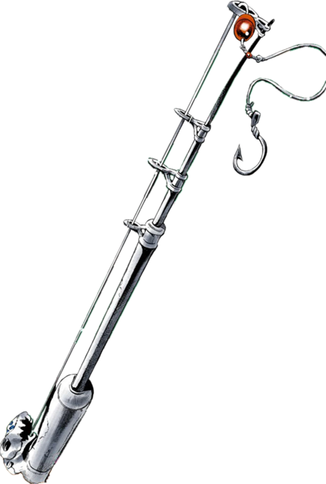

Bad Company
Stand Master~ Keicho Nijimura
| Power - B | Speed - B | Range - C | Persistence - B | Precision - C | Potential - C |
|---|
Description
Bad Company is manifested as 60 toy soldiers 4 model helicopters and 7 model tanks, all heavily armed and and dressed as American G.I.s. Each soldier is equipped with an M16 assault rifle, parachute, and combat knife. Despite the reduced size, the weapons are still functional and deadly. The Stands also comes equipped with a landmine that can cripple a man's leg. The Stand is most effective when all fire is concentrated in one area. However that tactic leaves Keicho vulnerable to attack.
Manga Debut: Chapter 278
Anime Debut: Diamond is Unbreakable Episode 4
Bastet
Stand Master~ Mariah
| Power - E | Speed - E | Range - B | Persistence - A | Precision - E | Potential - E |
|---|
Description
Bastet is used to turn people's curiosity against themselves. One could say "Curiosity killed the cat". Bastet has no fighting ability and relies on people to touch the stand. When touched, Bastet puts a magnetic curse on it's victim. When the curse is active, the victim will attract any magnetic object, even others who have been cursed. The curse will gradually become stronger and will either overwhelm or impail the victim. Whichever comes first. The only downside is that Mariah must stay close to the victims so the curse stays active.
Manga Debut: Chapter 199
Anime Debut: Stardust Crusaders Episode 30
Beach Boy
Stand Master~ Pesci
| Power - C | Speed - B | Range - B | Persistence - C | Precision - C | Potential - A |
|---|
Description
Beach Boy manifests as a simple looking fishing rod. However that is far from the truth. The Stands power comes from the fact that it can phase its line and hook through any object. Beach Boy is best used as an assassination tool, piercing through vital organs and such for a 100% chance of death. However the pulling strength is only as powerful as Pesci's hand, and the ability is canceled if Beach Boy is dropped. The line is also extremely sensitive and can transmit information back to Pesci. If the line is attacked in any way, it will reflect the damage back to the person hooked to it.
Manga Debut: Chapter 487
Anime Debut: Golden Wind Episode 14
Bites the Dust
Stand Master~ Kosaku Kawajiri
| Power - B | Speed - B | Range - A | Persistence - A | Precision - D | Potential - A |
|---|
Description
I have no fucking clue lol
Manga Debut: Chapter 418
Anime Debut: Diamond is Unbreakable Episode 35
Boy II Man
Stand Master~ Ken Oyangi
| Power - C | Speed - B | Range - B | Persistence - A | Precision - C | Potential - C |
|---|
Description
Boy II Man is a Stand with no combat ability, and is centered around the game "rock-paper-scissors"(RPS). If Ken proposes a game of RPS and the opponent accepts, the Stand starts a game with 3 rules. A draw nulls the round and must be played until someone wins. Eveytime Ken wins, he takes a third of the opponents energy and Stand. If the opponent wins 3 times, any energy stolen is returned. Boy II Man steals energy by ripping a third of the Stand away, and Ken will also acquire part of the stolen Stands power. But, with how powerful the Stand is, it has one glaring weakness. The opponent can cheat and there is nothing Boy II Man can do about it.
Manga Debut: Chapter 373
Anime Debut: Diamond is Unbreakable Episode 26